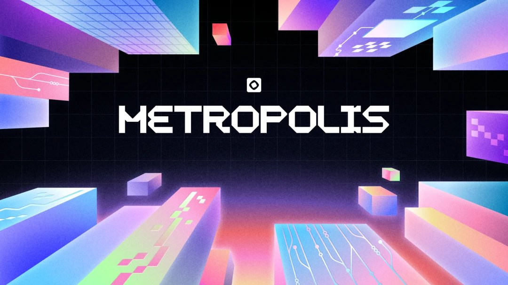

路演夜精读：四个 AI × Web3 项目¶

这是 Monad Metropolis 全球黑客松深圳站 Hacker House 的路演环节；同一天的宣讲和圆桌见 Monad 黑客松与 Agent 金融。
这场活动一句话总结¶
四个项目都指向同一个大趋势：让 AI Agent（能自己干活的 AI）学会「安全地花钱」，并把它的行为记录在区块链上。
- 项目 1 给 AI 一个「零花钱钱包」；
- 项目 2 让 AI（一只数字果蝇）在浏览器里养成，成长记录上链；
- 项目 3 给一群 AI 立「预算和权限规矩」；
- 项目 4 用密码学证明做一个「官方绝对没法作弊」的在线扑克。
即使技术细节你现在看不懂也没关系，先记住这四个项目分别解决什么问题，技术名词以后会一个个学。
项目一：Monet Switch —— 给 AI 的「零花钱钱包」¶
主讲人：郭春丽（独立开发者，自称做过约 200 个 AI 项目，曾做出抖音爆款「龙虾糖」）
它解决什么痛点¶
现在的 AI Agent 越来越能干，但有一个尴尬：它没法自己付钱。
举个例子：你让 AI 帮你调用一个付费 API（比如某个数据接口，调一次收几分钱），AI 干到一半发现要付费，只能停下来问你要银行卡号。而把银行卡直接交给 AI 又很危险——它可能乱花、被骗、把凭证泄露出去。
它怎么做¶
做一个给 AI 用的钱包，核心思路用主讲人的话说就是：
「给 AI 零花钱，银行卡留在你手里。」
- 你往这个 AI 钱包里充一小笔钱（「零花钱」），AI 只能花这笔钱；
- AI 要花钱 / 收钱时，通过一个叫 MCP【概念】 的服务来完成（MCP 可以理解为「AI 调用外部工具的标准插座」，就像 USB 接口，插上就能用各种服务）；
- 即使钱包被盗（「被突」），单笔上限几千笔也不会造成大额损失，而且一键撤销、立刻生效；
- 主讲人展示了在 Monad 测试网【概念】上的成果：11 笔真实结算、92 个测试全部通过（「全绿」）。
主讲人还用 AI 视频工具（提到 OPPO / 某模型 5.5）几分钟生成了一条广告片，台词是：
「给每个员工的每个 Agent 发一把钥匙，员工一条命令就……」「给 AI 零花钱，银行卡留在你手里，Monet Switch。」
小白能学到什么¶
- MCP 是 2024-2025 年 AI 圈最重要的概念之一：它让 AI 能标准化地连接外部工具（包括支付）。记住「MCP = AI 的工具插座」。
- AI 支付是一个真实的新赛道：当 AI 从「聊天工具」变成「执行工具」，「谁来替它管钱、怎么保证安全」就成了刚需。
- 独立开发者也能跑通全流程：一个人 + AI 编程工具，就能做出钱包、上链、甚至广告片。
- 主讲人反复说「我现在还是一个人，需要运营」——技术人常常缺会讲故事、会做社区的搭档，这其实是文科 / 语言背景学生的机会。
延伸概念¶
AI Agent、MCP（Model Context Protocol）、测试网 Testnet、结算 Settlement、私钥/钥匙、开源
项目二：浏览器里的「果蝇数字员工」¶
主讲人：未署名（项目基于谷歌开源的果蝇大脑模型）
这是四个项目里最「科幻」的一个，别急，慢慢看。
它解决什么痛点¶
现在大多数 AI Agent 有两个问题（主讲人的观点）：
- 大家共享同一套服务器和同一个「大脑策略」：结果千千万万个 AI 决策方式雷同，像同一个「黑箱」；
- 成长过程无法追溯：一个 AI 为什么变聪明了、经历了什么训练，没有可信记录。
它怎么做¶
不做大语言模型（ChatGPT 那种），而是在你自己的浏览器里，完整模拟一只「果蝇的大脑」，养成一只属于你的数字员工。
为什么是果蝇？ 果蝇的大脑相对简单且已被科学家完整测绘：
- 约 16 万个神经元；
- 2500 多万条有效连接；
- 其中 7835 个「可塑连接」（可以理解为「能被训练改变的连接」）。
这套神经模型完全在浏览器本地用 WASM【概念】 运行（WASM = 让网页高速运行程序的技术），大脑数据不离开你的电脑。
养成五步：领养 → 养成 → 冻结 → 比较 → 协作
| 步骤 | 做什么 |
|---|---|
| 领养 | 在本地生成你自己的「所有者密钥」和果蝇的身份 |
| 养成 | 浏览器里运行推理（思考）和「可塑性分析」（学习） |
| 冻结 | 在「考试」（用没见过的新数据测试）前，冻结学习记录，把记录的「哈希指纹」上链 |
| 比较 | 不同果蝇可以横向比较成绩 |
| 协作 | 多只果蝇组成「群落」一起决策（比如投票），但不会合并彼此的大脑 |
链上只存「指纹」，大脑留在本地：
- 第一步：导出神经元状态，计算存档包，把清单哈希上链；
- 第二步：在 Monad 测试网把钱包记录上链，合约登记来源；
- 第三步：校验与恢复——读链上记录，对比本地存档，哈希一致才算没被篡改。
演示场景：训练一只做「股票模拟交易」的果蝇——做对了就模拟分泌「多巴胺」（奖励），做错了就刺激「痛觉神经」（惩罚）。多只果蝇投票，结果大部分选择「观望」，达到门槛后就执行多数派的选择。
为什么不用 ChatGPT 那种大模型？（主讲人的核心论点）¶
- 果蝇模型：基于「连接组」的脉冲神经网络，神经状态会持续演化，模拟的是真正的「学习机制」；
- 大语言模型 LLM：本质是「根据上文猜下一个词」，靠提示词和微调整合记忆，主讲人认为那不是真正的神经状态实验机制。
注意：这是该项目的一家之言，不代表 LLM 没有价值。重点是理解「不同的 AI 范式」这个概念。
小白能学到什么¶
- 「本地运行 + 链上存证」是 AI × Web3 的经典组合：隐私数据留在本地，链上只放无法伪造的「指纹」（哈希），既保护隐私又可验证。
- 哈希（Hash）= 数字指纹：文件哪怕改一个字，哈希就完全不同。这是区块链「防篡改」的基础，务必搞懂。
- 脉冲神经网络（SNN）、连接组（Connectome） 是 AI 的另一条路线，不必现在懂，知道存在即可。
- DAO / 群体决策的雏形：多只果蝇投票做决定，这和 Web3 的 DAO【概念】治理思路一致。
延伸概念¶
WASM、哈希 Hash、智能合约、DID 去中心化身份、SNN 脉冲神经网络、连接组、DAO、测试网
项目三：Text Permit —— 给一群 AI 立「预算和权限规矩」¶
主讲人：何佳，华南理工大学软件学院
这是四个项目里逻辑最清晰、对小白最友好的一个，建议精读。
它解决什么痛点¶
设想一个场景：一个团队同时用 3 个 AI Agent 做市场调研——
- Agent 1：负责上网搜资料；
- Agent 2：负责买调研数据（比如财务年报）；
- Agent 3：负责整理报告。
团队只想为这件事花 10 美元。但问题是：3 个 Agent 各自调用不同的付费工具，谁也不知道整体花了多少。在系统后台看到的是一笔笔分散的请求，等加起来发现：超支了。
- Agent 1 花 6 美元；Agent 2 又申请 5 美元；Agent 3 再花 1 美元——总共 12 美元，超了。
- 每个 Agent 都觉得「我没超我的那份」，但全局预算已经爆了。
它怎么做：三件套¶
- 共同额度（共同钱包）：面向「这一项任务」设一个总预算，所有 Agent 都从这一个池子里拿钱；
- 权限卡：写清楚每个 Agent 能用哪些工具、做哪些任务、能花多少钱、什么时候失效；
- 可核对的账本：谁批准、谁调用、实际花了多少，全部记录；超额可以回溯、事后追责（「反补」）。
资金流转流程（重点理解这个机制）¶
- 负责人定义任务，写入预算和权限；
- Agent 请求进来，系统先检查两件事：有没有权限？任务还剩多少钱？
- 核查通过后，先「占住」额度（预授权），再去调用付费工具；
- 工具返回后，按实际费用结算，把多占的钱释放回去；
- 如果结果没回来，额度先保留，避免同一笔钱花两次。
用数字走一遍：
- 总预算 10 美元；Agent A 申请 6 美元 → 系统预留 6 美元，剩 4 美元；
- Agent B 申请 5 美元 → 虽然它有权限，但只剩 4 美元，系统直接拒绝，请求根本不会进入付费工具；
- A 实际只花了 4.2 美元 → 系统按 4.2 结算，释放多占的 1.8 美元，可用回到 5.8 美元；
- 网络原因导致回执重复到达 → 系统认出是同一笔，不重复扣款；
- 负责人撤销任务后，即使账户里还有余额，新请求也不能再执行——「有余额」和「有权限」被彻底分开。
最重要的设计原则¶
「不能让 Agent 自己承诺会遵守预算。」
预算检查、金额分析、权限判断、执行状态，全部由独立的程序完成，而不是交给 Agent 自觉。否则 Agent 等于拿到了「万能钥匙」，可能「聪明地」绕过系统。这和现实公司里「管钱的和花钱的必须是不同的人」是一个道理。
防篡改演示：系统生成一条回执并签名；把金额从 4.2 改成 9 再核验，立刻失败——说明记录一旦被改就能被发现。
系统定位¶
它不替代现有的 Agent 框架、钱包、支付协议，而是夹在中间的「中间件（Middleware）」：
- 身份工具解决「谁在操作」；
- 支付协议解决「怎么付款」；
- 日志系统解决「发生了什么」；
- Text Permit 补上最容易缺失的一层：共同预算 + 执行边界。
落地计划¶
- 第 1 个 30 天：打通授权、预算、结算、撤销；
- 再加入支付适配、故障恢复；
- 最后邀请 3-5 个真实团队用真实任务验证，验收标准包括：超额被拒绝、重复请求不重复扣款、撤销后异常恢复。
小白能学到什么¶
- 预授权 - 结算 - 释放是真实支付系统（包括信用卡、酒店押金）的通用模式，非常值得理解。
- 「不能让执行者自己当裁判」是重要的系统设计思想，在金融风控、智能合约设计里反复出现。
- 这个项目本身就是一个极好的「产品思维范本」：从一个具体痛点出发，机制严密，可验证。
- 结尾金句适合记下来：
「AI Agent 正从回答问题走向替人执行。执行能力越强，预算和权限边界就越需要被记录下来。给 Agent 执行的能力，让团队守住可掌握的边界。」
延伸概念¶
中间件 Middleware、预授权/预占额度、数字签名、幂等性（重复请求只生效一次）、对账
项目四：完全去中心化的在线扑克协议¶
主讲人：未署名（近 10 年工作经验，游戏开发背景，曾在年营收约 4 亿港币的游戏公司任职）
它解决什么痛点¶
在线扑克 / 棋牌最大的信任问题是：玩家怎么知道官方没作弊、没提前看到牌？
主讲人关注的是中心化发牌的信任问题：如果后台能提前知道牌面，玩家就需要额外的机制来验证洗牌和发牌过程。
它怎么做：三大支柱¶
- 完全去中心化，没有「需要信任的对象」：
- 客户端在浏览器里就能验证一切：洗牌过程、每一步操作、牌局结果；
- 用零知识证明验证游戏过程：
- 团队的目标是让玩家验证游戏步骤，减少对运营方的信任；实际安全性还取决于协议和实现；
- 之所以不用更早的证明系统，是因为它们太慢、需要很强的硬件，证明成本高到收入都覆盖不了；
- 自研安全（自研专用链 AppChain【概念】）：
- 现有链即便是号称高并发的，最终确认也可能要 4 秒，满足不了扑克的实时性；
- 主讲人认为要做到「Web2 级体验」必须自己做一条专用链，并以 Hyperliquid（一个非常成功的去中心化衍生品交易专用链）为标杆。
想了解这类证明工具，可以看 StarkWare 的 Stwo 项目：它是用 Rust 编写的 Circle STARK 证明器与验证器。这里仅作技术延伸，不据此认定路演项目使用了它。
一个协议层创新：玩家掉线怎么办¶
传统平台的做法很粗暴：玩家掉线就「罚款」。但这对玩家不公平——违法（掉线）成本很低时，玩家干脆弃牌走人。
主讲人自称首创了一套协议：在完全去中心化的牌局里，即使玩家掉线，游戏也能继续进行，从协议层面（而不是罚款）保护公平。
核心观点¶
「安全是解决用户摩擦成本最好的体验。」
- 上链 / 外部操作的成本对普通用户仍然太高；
- 首屏卡顿、延迟会直接降低转化率；钱包的买入、交付环节直接影响留存；
- 只有把体验做到极致、门槛足够低，「完全去中心化」才有底气去和中心化巨头竞争。
主讲人最后坦承：技术已经领先，但最缺两样东西——运营（把故事讲好、做好用户界面和社区）和投资人的建议。他也感慨今年赛道热点全是 AI 和某个方向，纯游戏的故事不好讲；尝试过「AI 扑克 / AI 分析」，但用户不太愿意为此付费。
小白能学到什么¶
- 零知识证明（ZK Proof）：让你「不透露秘密，也能向别人证明某件事是真的」（比如证明我没作弊，但不亮出我的牌）。这是 Web3 最硬核也最有前景的方向之一。
- AppChain（应用专用链）：当一条通用链满足不了某个应用的性能，就为这个应用单独做一条链。Hyperliquid 是最成功的案例，值得记住。
- 「去中心化」不是喊口号：关键在于客户端能否独立验证、是否存在中心化的幕后控制点。
- 再次印证：强技术团队普遍缺运营 / 内容 / 社区角色——这是非技术背景同学切入 Web3 项目最现实的入口。
- 也给我们泼了一盆冷水：好技术 ≠ 好生意，用户是否愿意付费、体验是否够好同样关键。
延伸概念¶
零知识证明 ZK、AppChain 应用链、去中心化、客户端验证、Hyperliquid、TPS / 最终确认时间
这场路演的共同主线（串起来理解）¶
flowchart TB
P1[项目1 AI钱包<br/>让 AI 能安全花钱] --> T((AI Agent 经济))
P3[项目3 预算权限<br/>管住一群 AI 的钱] --> T
P2[项目2 果蝇员工<br/>AI 成长链上存证] --> T
P4[项目4 去中心化扑克<br/>密码学证明防作弊] --> T
T --> V[核心能力需求<br/>支付 · 存证 · 证明 · 身份]四个项目共同透露的信号：
- AI Agent 正在从「聊天」走向「执行」，而执行就绕不开「钱」和「信任」；
- Web3（区块链）恰好提供了「不依赖单一中心方」的支付、存证、证明工具——AI × Web3 的结合点就在这里；
- 行业真实的人才缺口，除了工程师，还有运营、内容、社区、产品、合规；
- 大量项目跑在 Monad 这类新一代高性能 EVM 链上（下一场活动的主角）。
我现在能做什么（入门版清单）¶
- 用自己的话，向朋友 / 在笔记里复述这四个项目分别解决什么问题；
- 查清楚并记下这几个词的「人话解释」：MCP、AI Agent、智能合约、测试网、哈希、零知识证明（可参考 小白词典）；
- 注册一个 MetaMask 钱包（先只玩测试网，绝不充钱），体验一次「钱包」是什么；
- 了解 MCP：找一篇 MCP 科普文章读一读，知道它长什么样；
- 把这四位主讲人「缺运营 / 缺搭档」的信号记在心里——这就是我未来可以提供价值的位置；
- 去读第二篇精读：Monad 黑客松与 Agent 金融圆桌，搞懂大家反复提到的 Monad 到底是什么。